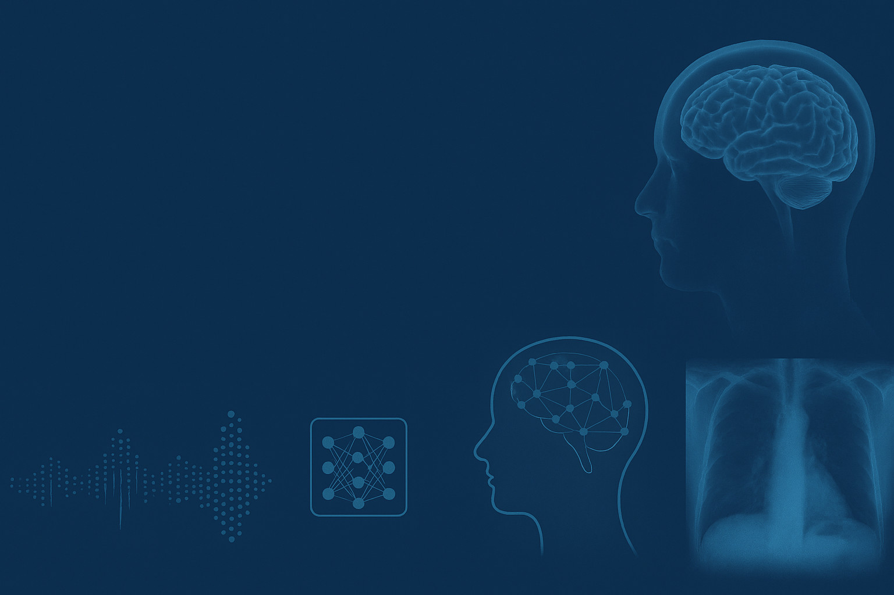

IEEE NSS MIC RTSD 2026 en Granada: SiPBA participa y Juan Manuel Górriz es Deputy General Chair
Nov 20, 2026

Statistical signal processing, analysis and machine learning applied to medical imaging.
Check out the latest Papers , Conferences , News , and More »